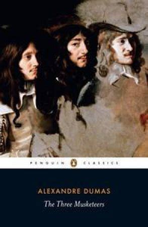

Dumas' The Three Musketeers is one of the most widely read French pieces of literature in the world. We follow the tales of D'Artagan as he joins the Musketeers brigade.
I felt this book to be worthy of all praise given to it. It is written very well, and the English translation was easy to understand. The overarching message is one of standing up against injustice, a message that one must instill in oneself.
